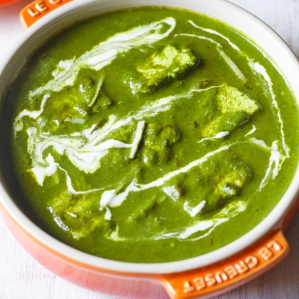

Palak Paneer
To taste happiness with MyCookBook
Really goood with roti, rice or naan!!!
INGREDIENTS

Paneer
Spninach
Tomatoes
Salt
Butter
Ginger
Garlic
Oil
Fenugrek leaves
Garam masala
Fresh cream
Sugar
DIRECTION !!!
Step 1:
Blend spinach in a mixer and make a smooth puree
Step 2:
Heat oil and butter and add ginger, garlic, tomatoes and saute it for 2 minutes
Step 3:
Add spinach puree, 2 cups of water and let it cook
Step 4:
Add fenugrek leaves and garam masala
Step 5:
Add Paneer cubes and fresh cream. Let it cook on medium flame for 2 to 3 minutes.
Serve the restaurant style Palak Paneer!!!!